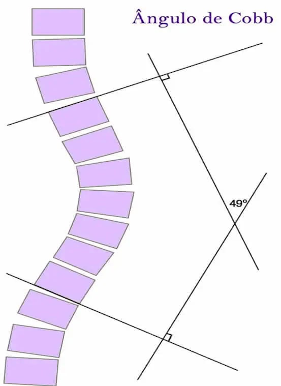
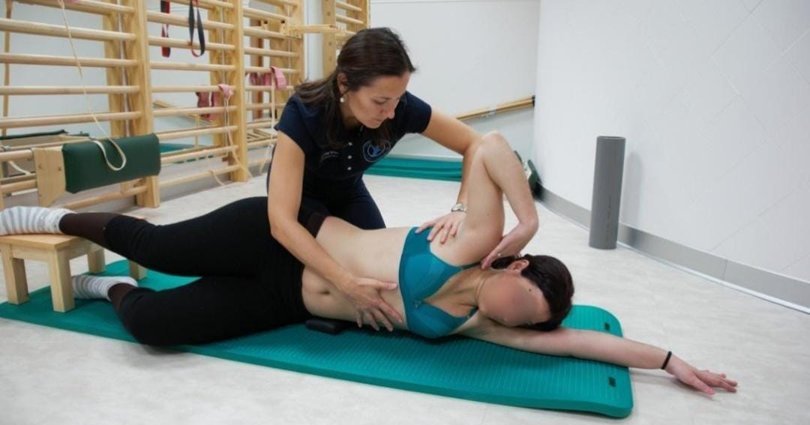
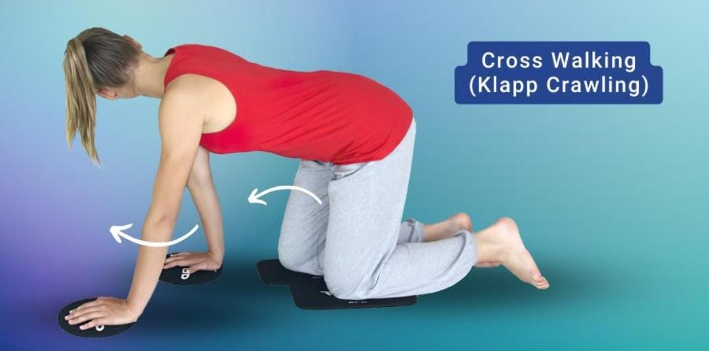
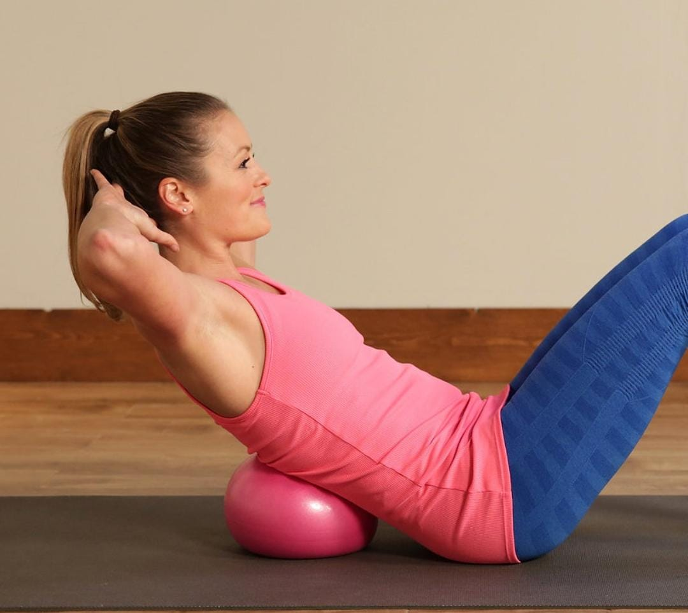
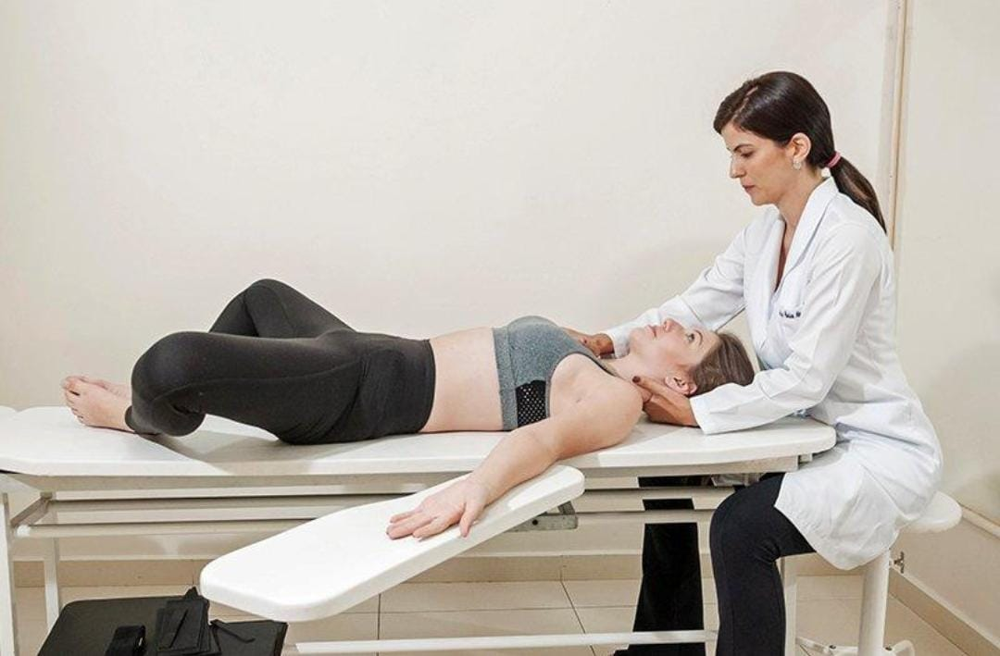
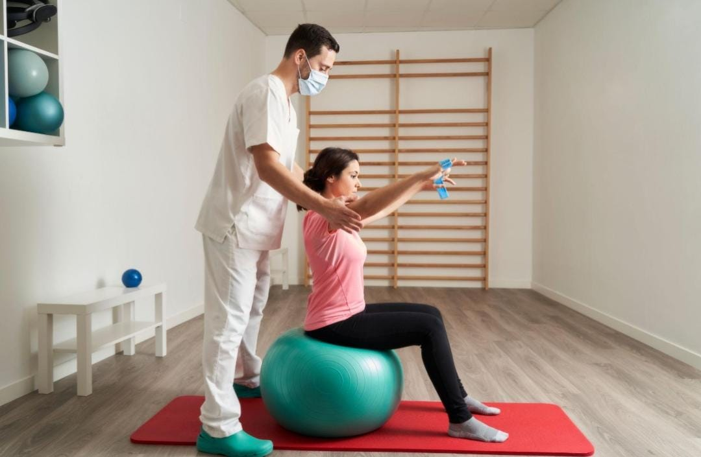

COMPREENDENDO A ESCOLIOSE
Quando ouvimos a palavra escoliose, geralmente pensamos em algo "fora da curva", literalmente. Muitas vezes, essa associação surge a partir de casos mais graves que conhecemos pelo famoso "boca a boca", por meio de familiares, amigos ou vizinhos.
Mas afinal, o que é a escoliose?

O QUE É?
A escoliose é uma condição caracterizada por uma curvatura anormal da coluna vertebral, que afeta a forma tridimensional das vértebras (comprimento, largura e altura). Dependendo do grau da curvatura, ela pode gerar algumas complexidades, influenciando a postura, o equilíbrio e, consequentemente, a qualidade de vida do indivíduo. Existem diferentes causas para o surgimento da escoliose. Entre elas, destaca-se a Escoliose Estrutural, que apresenta uma curvatura permanente da coluna vertebral, podendo assumir o formato de “S” ou “C”. Essa condição pode surgir por diferentes motivos, como:
ALGUMAS DAS TÉCNICAS UTILIZADAS
A escoliose exige atenção e acompanhamento adequado, pois cada caso apresenta características e necessidades específicas. Buscar informação, avaliação profissional e tratamento individualizado contribui para melhorar a qualidade de vida, tanto física quanto emocional, favorecendo maior autonomia e bem-estar.
Entre as abordagens utilizadas, a healingEducação em Dor é uma estratégia que ajuda o paciente a compreender que a dor é influenciada por fatores biológicos, emocionais e sociais, reduzindo medos e crenças equivocadas, aumentando a adesão ao tratamento e promovendo participação ativa no processo de recuperação.
CINESIOTERAPIA
A cinesioterapia, por meio dos Exercícios Fisioterapêuticos Específicos para Escoliose (PSSE), constitui uma das principais abordagens conservadoras para o tratamento da escoliose idiopática do adolescente, tendo como objetivos a correção postural, a estabilização da curvatura vertebral e a melhora da funcionalidade e da qualidade de vida dos pacientes. Esses exercícios atuam principalmente por meio da autocorreção tridimensional da coluna vertebral, além de incluírem exercícios de estabilização, fortalecimento muscular, treinamento respiratório, conscientização corporal e orientações para as atividades de vida diária.

Entre os métodos mais utilizados destacam-se Schroth, SEAS, BSPTS, FITS, Lyon, Side Shift e DoboMed, sendo o método Schroth o mais amplamente estudado na literatura científica.
MÉTODO SCHROTH
O Método Schroth é uma técnica de correção tridimensional da escoliose que combina exercícios posturais, respiratórios e sensório-motores, desenvolvida por Katharina Schroth e aperfeiçoada por Christa Lehnert-Schroth.

Segundo estudos, o Schroth isoladamente é eficaz na redução do ângulo de Cobb e do ângulo de rotação do tronco, bem como na melhoria da qualidade de vida a curto prazo, em comparação com a ausência de intervenção ou outras terapias conservadoras na escoliose idiopática do adolescente (EIA), mas a melhora no ângulo de Cobb não ultrapassou a diferença mínima clinicamente importante.
MÉTODO KLAPP
O Método Klapp é uma técnica fisioterapêutica desenvolvida por Rudolf Klapp, baseada na observação de que os animais quadrúpedes raramente apresentam deformidades na coluna vertebral. A técnica utiliza exercícios realizados principalmente na posição de quatro apoios, com diferentes posturas e deslocamentos, visando promover alongamento, mobilidade e fortalecimento da musculatura responsável pela estabilização e alinhamento da coluna.

Aplicação na escoliose
Em indivíduos com escoliose idiopática, a técnica pode contribuir para a melhora do alinhamento postural e do equilíbrio muscular da coluna vertebral.
Os exercícios favorecem o alongamento das estruturas encurtadas e o fortalecimento dos músculos envolvidos na manutenção da postura, auxiliando no controle das alterações decorrentes da escoliose.
TÉCNICA ISOSTRETCHING
O Isostretching é uma técnica fisioterapêutica que combina exercícios de alongamento, fortalecimento muscular e controle respiratório. O método busca melhorar a postura, a flexibilidade e o equilíbrio muscular por meio da contração dos músculos posturais associada à expiração profunda.

A técnica é realizada por meio de exercícios executados de forma excêntrica, sempre associados à expiração profunda e à contração dos principais grupos musculares. O método dá ênfase ao fortalecimento dos músculos responsáveis pela manutenção da postura corporal.
O QUE É A REEDUCAÇÃO POSTURAL GLOBAL (RPG)?
A Reeducação Postural Global (RPG) é um método fisioterapêutico criado pelo fisioterapeuta francês Philippe Souchard. A técnica baseia-se no conceito de que os músculos funcionam em conjunto, formando cadeias musculares interligadas.

Como a RPG atua no tratamento da escoliose?
A RPG busca tratar o corpo de forma global, identificando os encurtamentos musculares e as compensações posturais que contribuem para o desenvolvimento ou agravamento da escoliose.
Durante o tratamento, são realizadas posturas específicas que promovem:
IMPORTÂNCIA DO ACOMPANHAMENTO FISIOTERAPÊUTICO
O tratamento da escoliose deve ser individualizado, levando em consideração a idade do paciente, o grau da curvatura e o potencial de crescimento ósseo.
O fisioterapeuta desempenha papel fundamental na avaliação, acompanhamento e escolha das estratégias terapêuticas mais adequadas. Além disso, orientações sobre hábitos posturais, atividades físicas e ergonomia contribuem para melhores resultados ao longo do tratamento.
